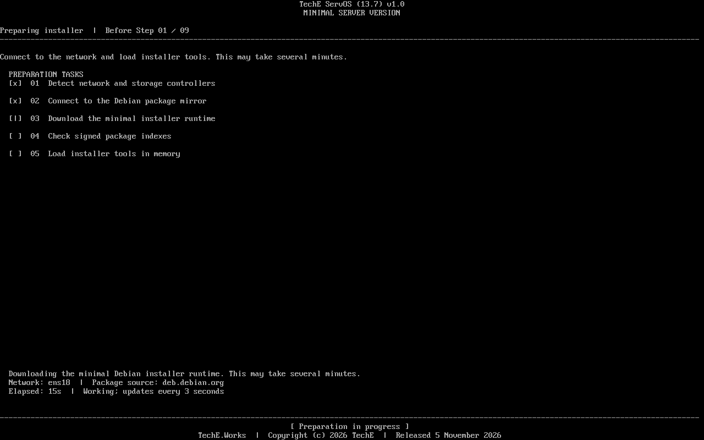
Current ISO · observed
Preparation progress
VM281 connected to Debian package mirror and began downloading the minimal installer runtime. This screenshot does not show completion.
One numbered flow exposes disk identity, storage choices and six visible installation tasks. Earlier QEMU runs show ext4, XFS and Btrfs installed boots; the ZFS and mdadm RAID views show selectable layouts. Current-candidate captures appear first, with their own test state.
2792e3044b94f94b263dc48a11c7e7fe3154d3e415050d5366683a190925260bf2c20f25fb1ecbe7b30dd286f7b89b06d087d9a3
VM281 connected to Debian package mirror and began downloading the minimal installer runtime. This screenshot does not show completion.
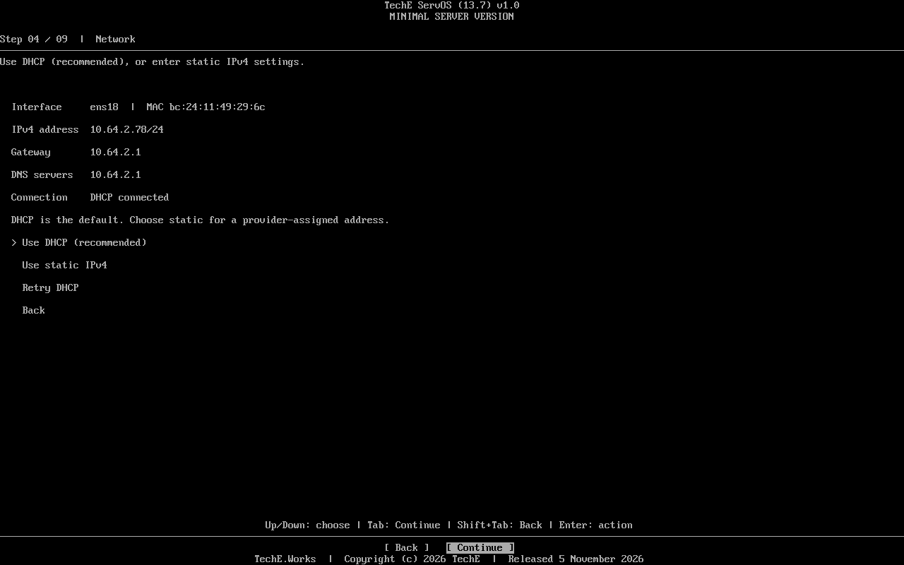
The numbered flow reached IPv4 configuration on VM281. Network and SSH outcomes remain pending.

The installer displayed one disposable 8 GiB QEMU disk, stable by-id path and existing-partition state before selection. No disk write is shown here.
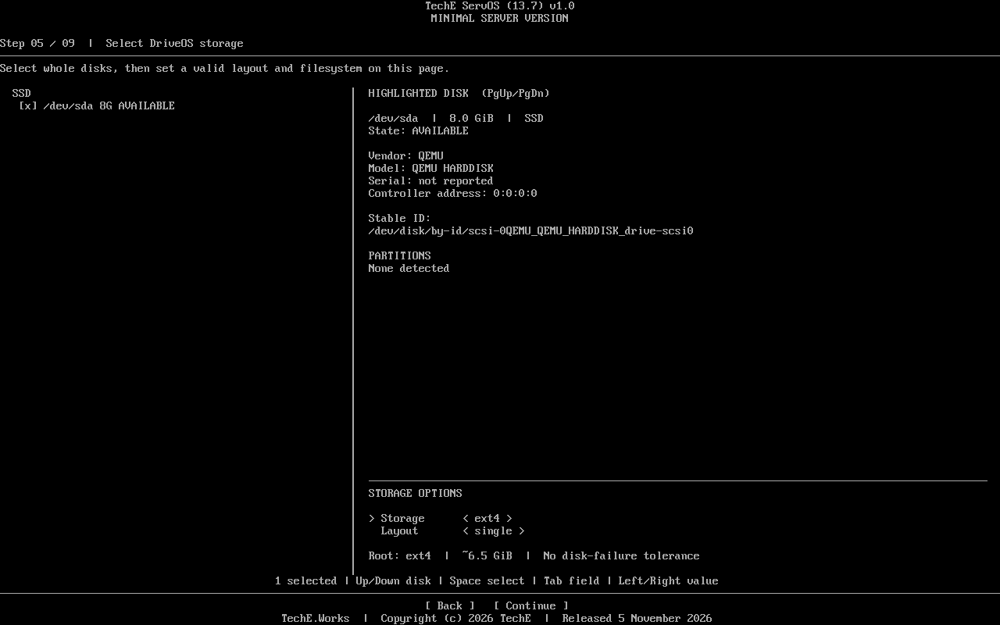
VM281 showed ext4 single-disk capacity and the explicit absence of disk-failure tolerance. Selection is observed; installed result remains pending.
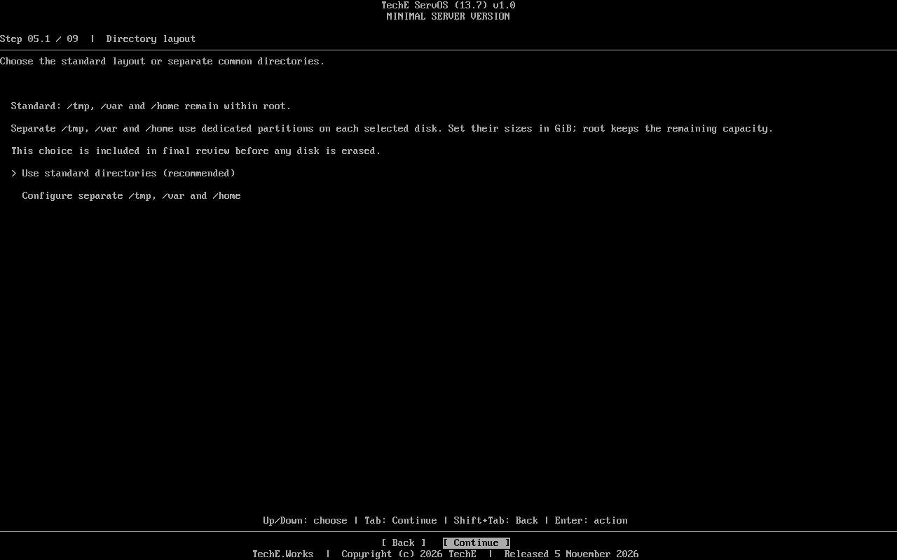
The installer offers standard directories or dedicated partitions for /tmp, /var and /home. VM281 has not established a separate-partition installed PASS.
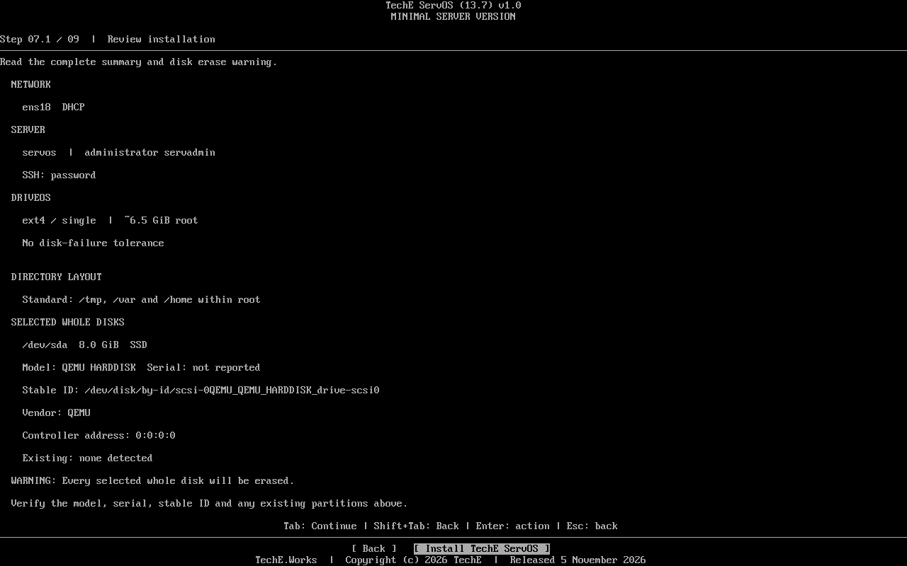
VM281 displayed selected whole disk, stable identity, network, account, ext4 and directory layout before the disk-write decision.
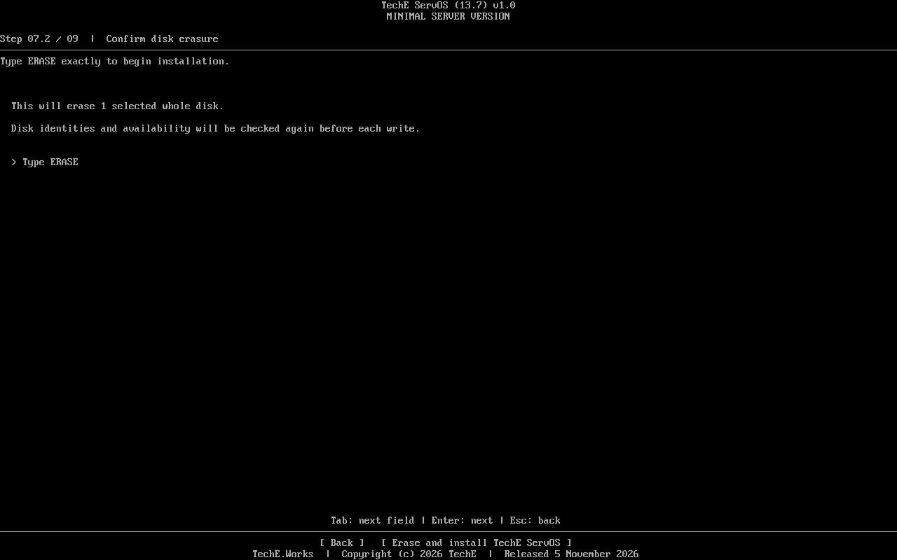
The next page requires typing ERASE exactly and says one selected whole disk will be erased. This is a safety control observation, not install completion.
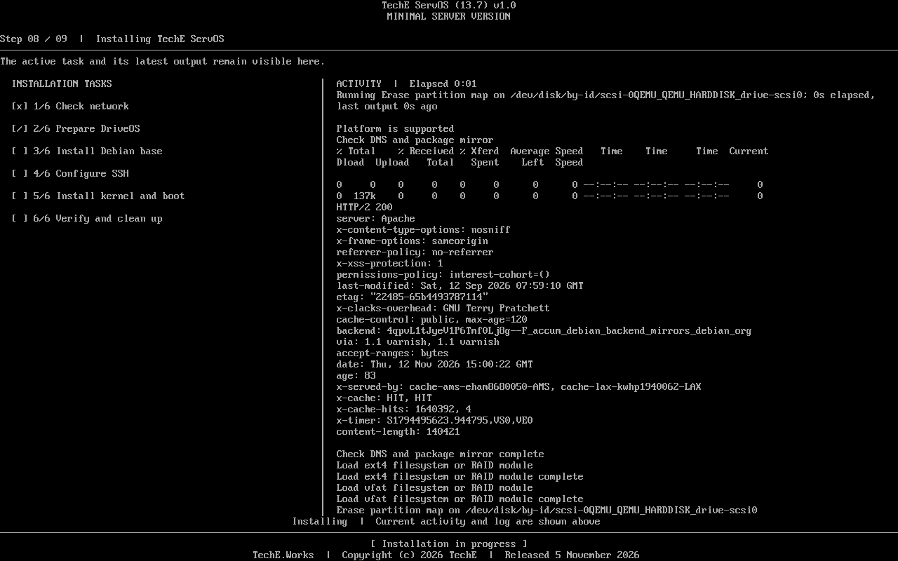
The live screen showed task 1 checked, task 2 preparing the disk, elapsed 0:01 and current command output. It does not prove install completion or any speed target.
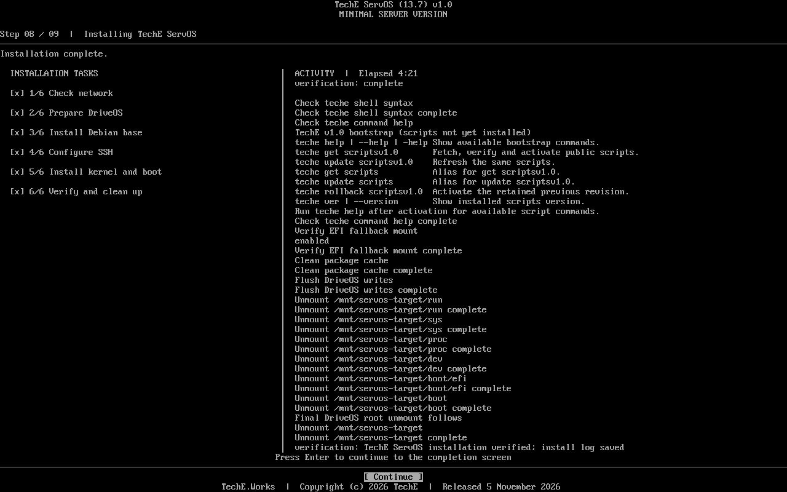
VM281's one-disk ext4 run checked all six tasks and reported verification complete at 4:21. This is a fixture observation, not a general install-time promise.

The installer named ext4 single-disk storage, administrator and the saved install log, then directed the operator to remove installation media before first boot.
After shutdown, PVE was set to ide2=none,media=cdrom and boot=order=scsi0 before VM281 restarted. The console showed Debian 13.7, ext4 root /dev/sda3, SSH address and /teche.scripts/v1.0/. QA-only SSH confirmed the root filesystem. Public scripts fetch subsequently failed.
9269b7641117b963986a4c6f5e157a41486fc84c5283fe8cf4fc96180617c097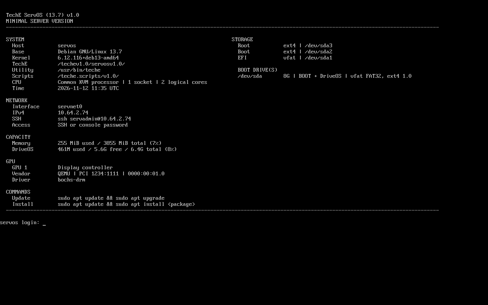
VM276 booted from its installed disk after ISO detachment on 582e026. This does not qualify the current ISO.
VM280 completed all six tasks in 3:04, then cold booted without the ISO; SSH confirmed its XFS root. This is one measured QEMU fixture, not a speed guarantee.
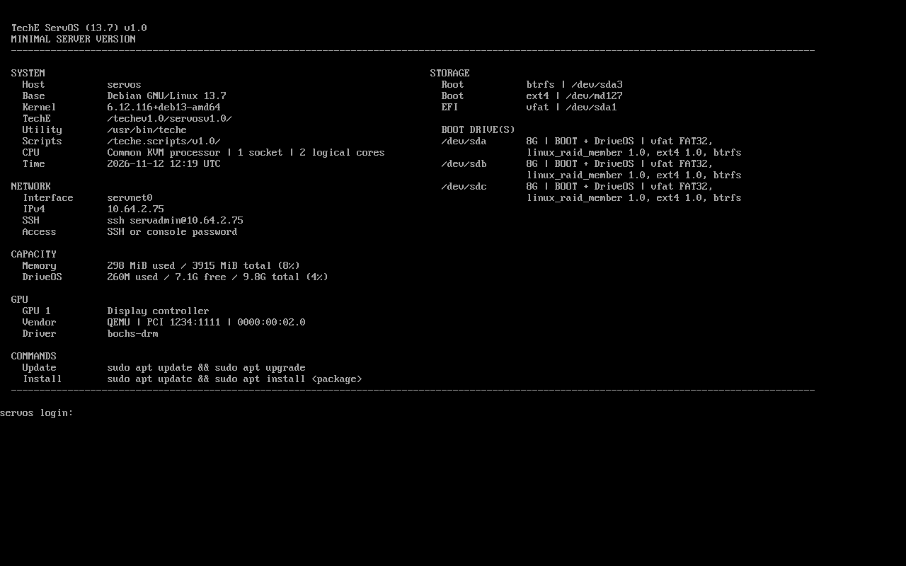
VM279 completed all six tasks in 4:22 and cold booted its three-disk Btrfs RAID1 setup. Case evidence; current-candidate RAID qualification is pending.
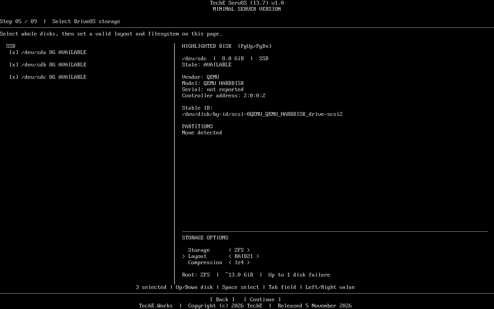
The three-disk ZFS RAIDZ1 menu was displayed on 582e026. No ZFS install or cold-boot PASS is claimed.
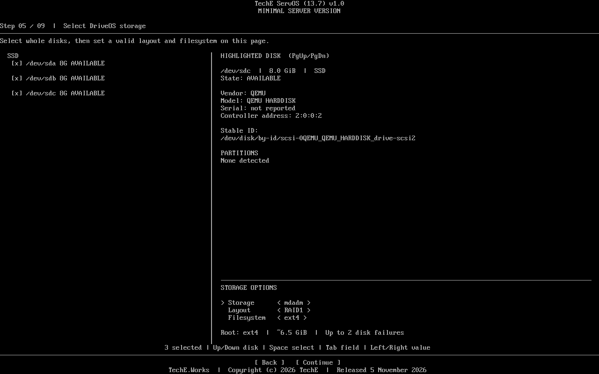
The RAID1 layout was displayed on 582e026. No mdadm install or cold-boot PASS is claimed.
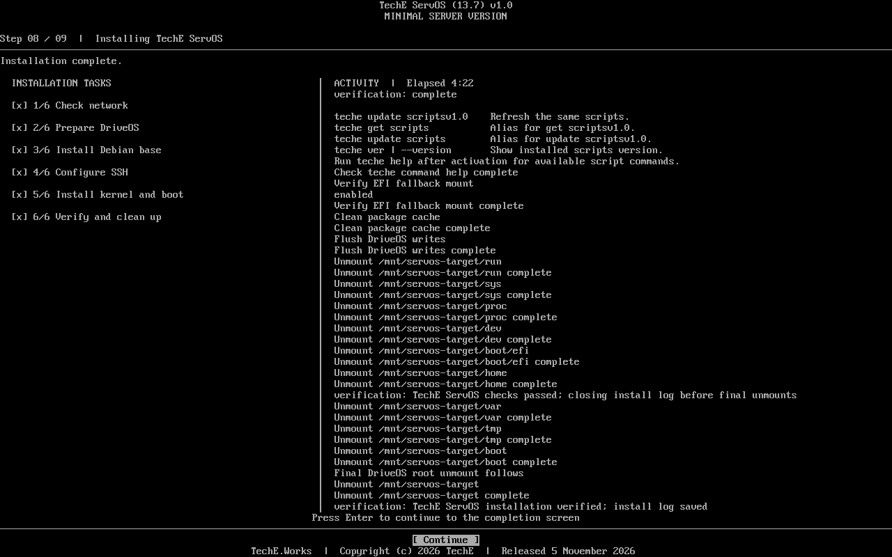
The prior Btrfs fixture showed all six tasks checked with elapsed 4:22. Its case report ties this screen to that exact run, not the current ISO.
The candidate source, build, QA, rights, reviewer and Business records must be bound to the final artifact before any public release claim. This page is a branch draft and does not supply a download link.